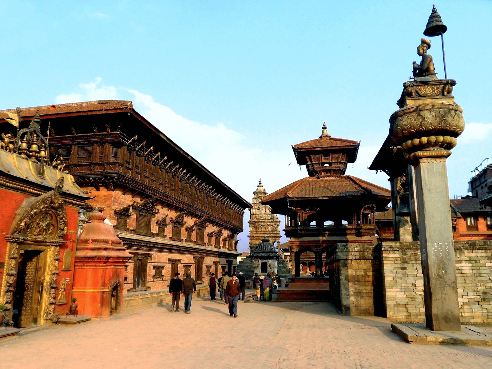
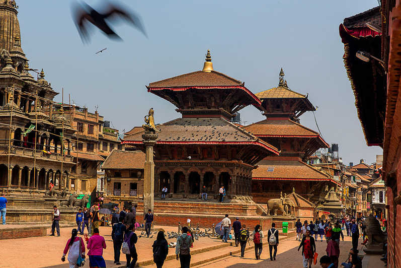

Discover ancient temples and monuments in the valley of the Gods where Hinduism and Buddhism co-exist in perfect harmony. Learn about the myths and legends that shaped the lifestyle of Nepalis for centuries, since ancient times.
Savor traditional Newari food cooked on wood ovens while you stroll through the charming little alleys around the Durbar Squares of the three cities of the Kathmandu Valley; Bhaktapur, Patan or Kathmandu.
Buy handicrafs from artisans who still work according to old traditions that go back centuries. Admire the fine architecture and exquisite woodcarvings of Newar craftsmen whose artistic brilliance are showcased around the three cities in the form of temples and monuments built centuries ago.
Watch how the people of the valley still use their temples to practice rituals that have been passed down from generation to generation. Enjoy the colorful festivals of the valley that involve Gods and Goddesses including the Living Goddess Kumari on several occasions. Follow the chariot processions that negotiate the narrow streets of old Kathmandu.
Visit the 7 monuments designated as UNESCO World Heritage Sites around Kathmandu in 48 hours.
There is a popular folk tale that talks about the establishment of Kathmandu Valley. Long ago, during the Pleistocene era, Kathmandu Valley was a vast lake – a beautiful exhibition of aquatic flora and fauna. Around the same era, when Manjushree, a holy Buddhist Saint from Tibet, saw a beautiful lotus flower floating in the center of the lake, boundless admiration started to grow inside his heart, which evoked his devotion to hold and worship the flower.
He then cut the Chobar Hill which now can be seen as a deep gorge, letting the lake water drain out, leaving a fertile valley for human settlement. Later the settlement became a well-known terminal for diverse people: for devotees both Hindus and Buddhists, Tibetans and Indian merchants, artisans, emperors, explorers, historians and more.
The Kathmandu Valley has always been a melting pot of diverse cultures, religions, arts and crafts. The Gopala and Kirat dynasties ruled during the earliest periods, followed by the Licchavi (300-879 AD), who, correspondingly, developed the city with a passion, traditional art, and religious beliefs.
The many dynasties that ruled the valley have left a rich legacy in the form of cultural and religious harmony. The various Hindu temples and Buddhist monasteries have been standing next to each other for centuries. Kathmandu enjoys diverse ethnicities, colorful festivals, and countless celebrations.
The Kathmandu Valley is comprised of three historic cities - Kathmandu, Patan, and Bhaktapur, which were once independent states ruled by Malla kings, who ruled the cities from the 12th to the 18th centuries and competed with each other to glorify their reign by building monuments and temples that showcased the craftsmanship and architectural skills of Newar artisans. It was a time when even the mighty Mongol Emporer Kublai Khan hired exceptional craftsmen from Kathmandu Valley to glorify his empire.
The famous Pagoda style architecture is a gift from the Kathmandu Valley to China. Now the valley is home to seven sites which make the valley a UNESCO Cultural World Heritage Site, a reminder of the golden era of Nepali architecture.